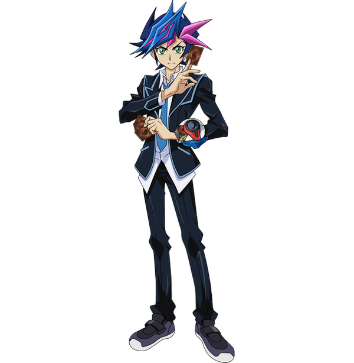
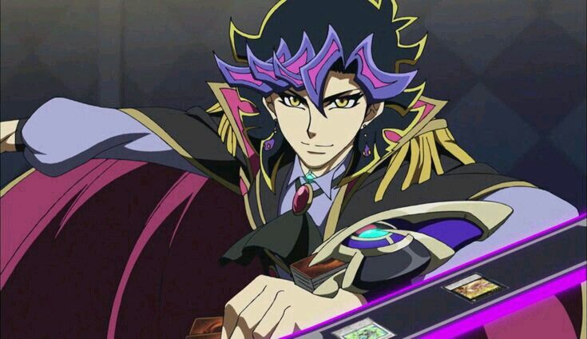
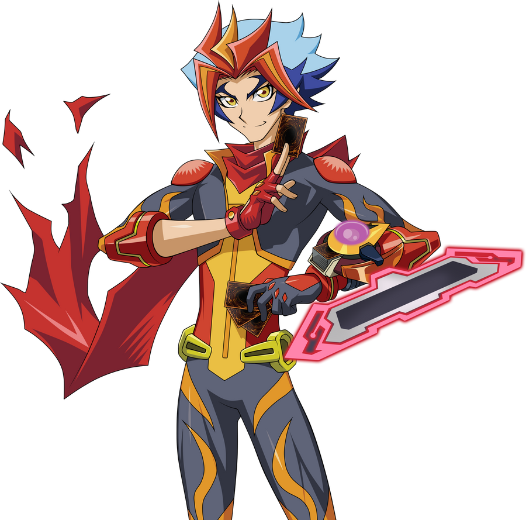
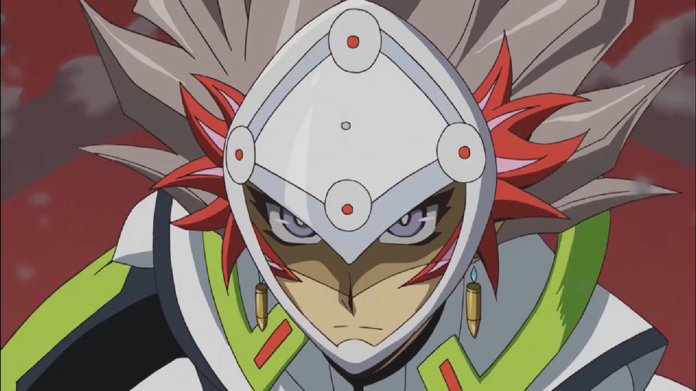

Yusaku
Yusaku Fujiki est le principal protagoniste de Yu-Gi-Oh! VRAINS et une ancienne victime du projet de Hanoï , ce qui lui a valu d'être à l'origine de l'Ignis des Ténèbres, Ai . Après son sauvetage, il a commencé à chasser les Chevaliers de Hanoï à LINK VRAINS sous le nom Inconnu. Après avoir rencontré Cal Kolter , il a commencé à opérer sous le nom de Playmaker.

Ai
Le "L'Ignis des Ténèbres", alternativement nommé Ai, est un personnage de Yu-Gi-Oh!. Il est l'antagoniste final de la série. Il est l'un des six Ignis dont il est basé sur Yusaku Fujiki , et est l'un des partisans de la coexistence humaine. Après sa victoire et celle de Yusaku sur Bohman , Ai est resté le dernier Ignis restant. Il a pris une apparence humaine et a pu manifester cette apparence dans le monde réel en détournant un SOLtiS . Il a assumé un rôle plus sympathique mais antagoniste forcé, prenant Roboppi sous son aile après lui avoir donné son libre arbitre et prévoyant d'utiliser SOL Technologies à ses propres fins. Il a été révélé qu'il avait fait cela pour entraîner sa propre fin de peur que son existence ne mette fin à l'humanité. Il a finalement obtenu son souhait après avoir été vaincu par Playmaker et est ainsi devenu le 6e et dernier Ignis à être résilié, mais Ai a été brièvement vu ressuscité 3 mois après sa résiliation.
Forme Ignis

Forme SOLtis

Soulburner
Takeru Homura est un personnage de la saison deux de Yu-Gi-Oh! VRAINS anime. Il est connu sous le nom de Soulburner dans Link VRAINS .Takeru montre un manque de confiance en lui et compte toujours sur Flame pour lui donner des conseils sur la marche à suivre.

Revolver
Ryoken Kogami, est le chef des Chevaliers de Hanoï qui opère dans LINK VRAINS sous le nom de Revolver. Il a agi en tant qu'antagoniste principal dans la saison 1, avant de devenir un allié improbable de Playmaker dans la saison 2. Dans la saison 3, il continue de travailler avec Playmaker pour empêcher Ai de mettre en œuvre ses plans pour détruire l'humanité, bien que sa méfiance envers Playmaker le conduit parfois à agir seul.
